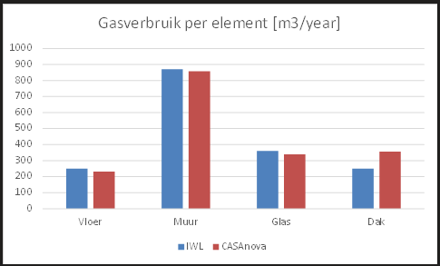
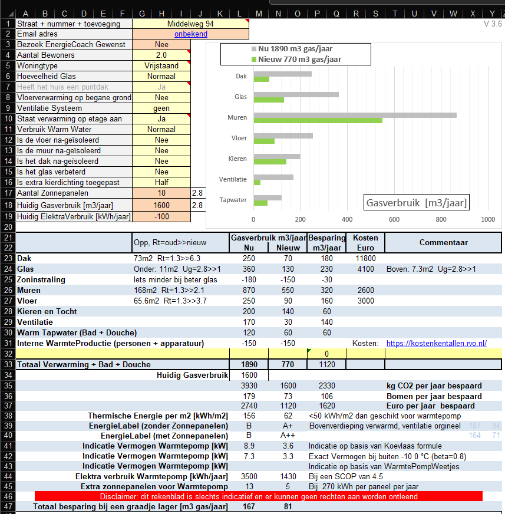
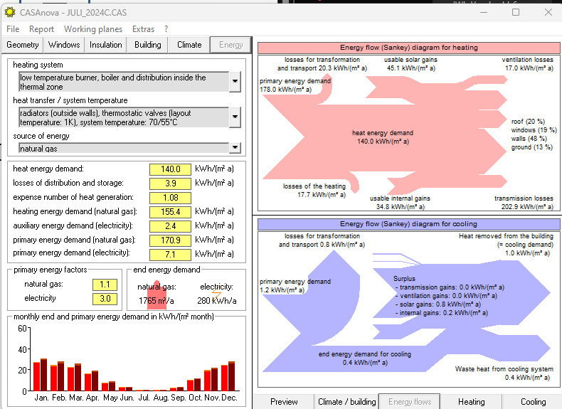
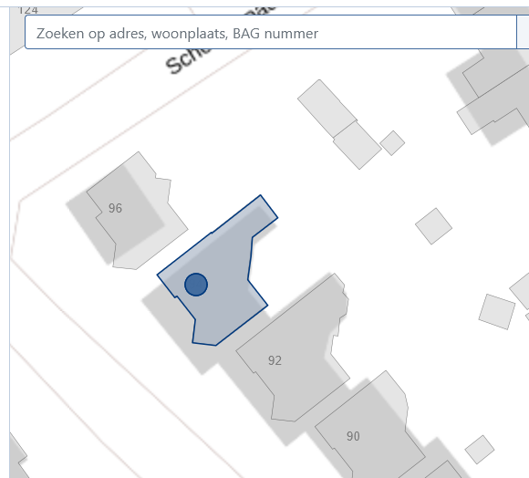
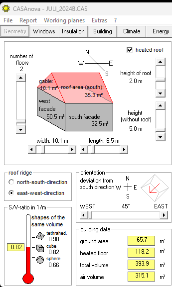
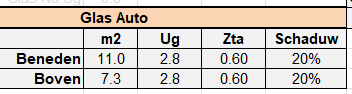
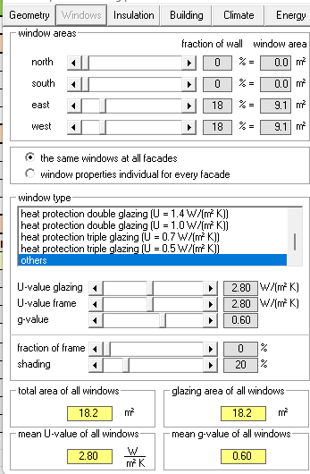
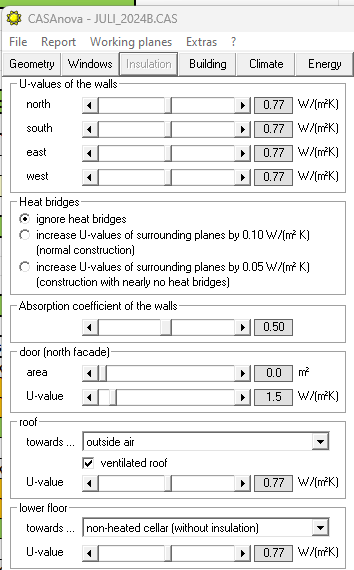
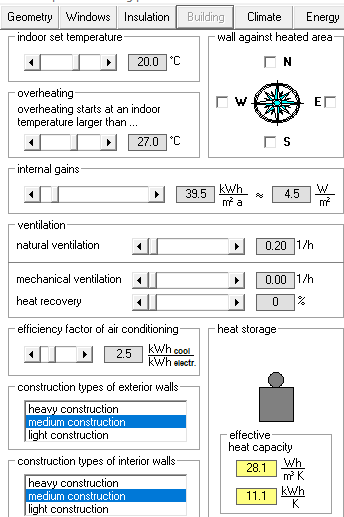
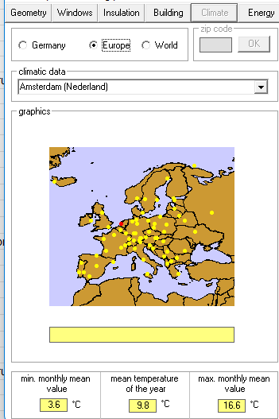

In deze notitie wordt het energieverbuik van een aantal woningen berekend met twee programma's, Inzicht Warmtelek en CASAnova.
Als eerste is de woning op de middelweg 94 zoals deze 10 jaar geleden was doorgerekend.
Als tweede is dezelfde woning in de huidige status (veel beter geïsoleerd) doorgerekend.
| Woning | Echt m3 gas | IWL m3 gas | CASA m3 gas | IWL E/m2 [kWh] | CASA E/m2 [kWh] |
|---|---|---|---|---|---|
| Middelweg 94 / 2014 | 1600 | 1890 | 1765 | 156 | 155 |




Opp Muur+Glas: - Inzicht_Warmtelek = 170 m2 - Casanova = 166 m2 |
 |
|---|---|
 |
 |
|---|---|
1 / 1.3 = 0.77 |
 |
|---|---|
2 personen * 130 W 50% aanwezig + 2000 kWh / jaar Dat alles bij 120 m2 Levert ongeveer 4.5 W/m2 Natuurlijke ventilatie is laag ingeschat |
 |
|---|---|
|  |
Diagram S/V
The parameter S/V is the ratio of the area of a building’s envelope and its volume. This ratio characterises the influence of a building’s geometry on its heat energy demand. The smaller the ratio, the more compact and the more energy-saving is the building. In this section the S/V-ratio is compared with that one of a sphere (lowest possible S/V-ratio), of a cube and of a tetrahedron which each fill the same volume as the building.